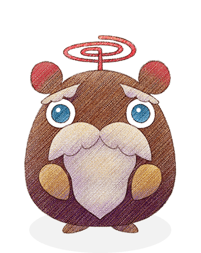
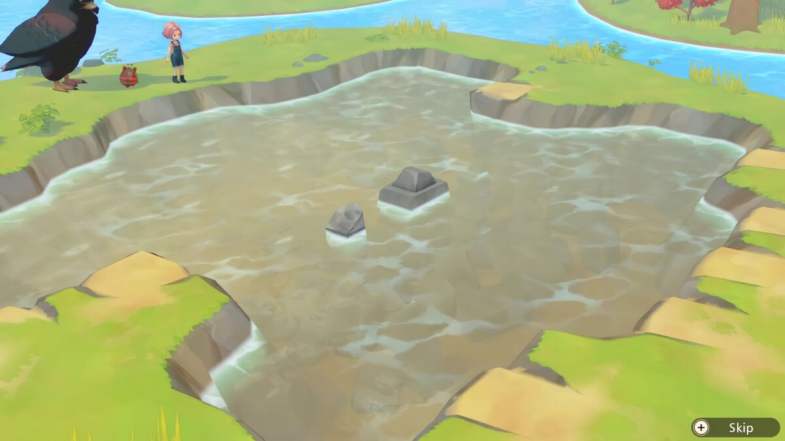
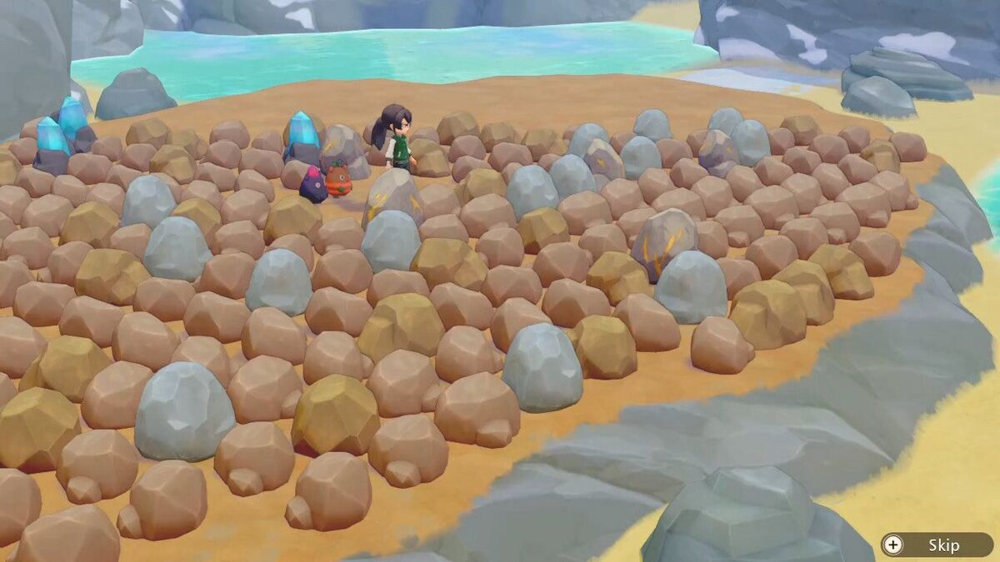
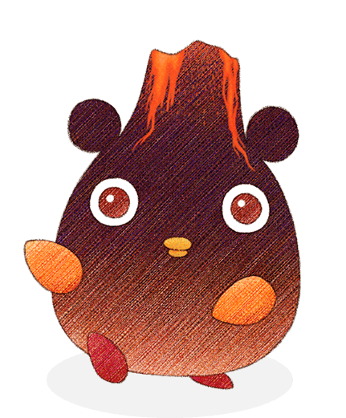
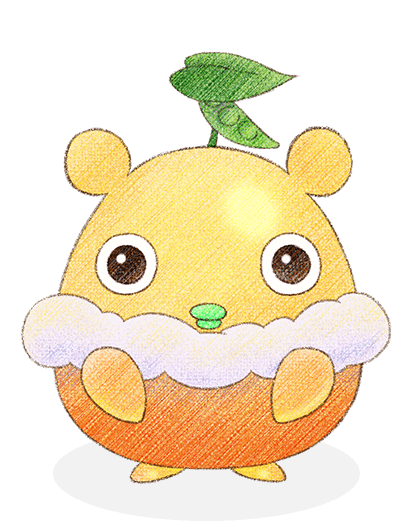

Duendes de la cosecha


En Story of Seasons: Pioneers of Olive Town, encontrarás criaturas redondas y rosadas que rebotan en los cultivos y en las rocas. Estos son los duendes seguidores y a medidas que los vallas recolectando podras aprobecharlos en el futuro obteniendo recompensas.
Lugares secretos de los duendes

A medida que avances en el juego y realices diferentes actividades en la granja y en la mina conseguiras duendes seguidores y con eso desbloquearas diferentes lugares secretos donde podrás ir a jugar los minijuegos de los duendes y en esos minijuegos podras obtener muchas recompensas las cuales mayormente son monedas de la cosecha y tambien hay zonas donde podras recolectar materiales.
Una vez que logres recolectar cierta cantidad de duendes aparecera el duende Compas, un duende que te ayudara llevandote a todos los lugares secretos de los duendes, pero para tener acceso a esos lugares tienes que desbloquearlo primero y cada lugar tiene diferente requisitos.
1) Aldea de los duendes de la tierra

Una vez que encuentre 25 duendes, podrá visitar la Aldea de los duendes de la tierra, donde estos te darán materiales, comida y peces. Cuantos más duendes asignes, más bienes obtendrás y de mayor calidad serán. Asegúrate de visitar la aldea de los duendes de la tierra con frecuencia para recoger recompensas. Los duendes te darán diferentes recompensas por ejemplo: Tocón te dará madera, Pedrusco te dará piedras o minerales y Mimitos comida para tus animales. Intenta probarlos todos.
Este lugar es el hogar de las criaturas mágicas llamadas espiritus de la tierra o duendes de la cosecha. Ubicado en la parte trasera de la aldea hay un árbol gigante, y en su base se encuentra el duende Jefe. Una vez que se desbloquea la aldea, el jugador puede visitarla en cualquier momento hablando con Navi cerca de su casa. El duende Jefe dirige el lugar y tiene tres funciones las cuales puedes acceder solo hablando con el, cuando hables con el pueedes escoger tres opciones las cuales son el de soltar animales, recoger objetos perdidos y ver los productos que vende en su tienda.
Funciones del duende Jefe
Liberar un animal
Si alguna vez decides separarte de tus animales, Boss Sprite los llevará a Earth Sprite Village por ti. Esto no cuesta nada y el animal es trasladado inmediatamente al pueblo. Cuando hablas con Boss Sprite después de entregar un animal, te dirán diferentes cosas sobre él, incluido que lo están haciendo bien.
Objetos perdidos
Si has perdido objetos importantes en el camino, puedes recuperarlos de Boss Sprite a través de Objetos perdidos por el bajo precio de 1 Sprite Coin. Lost and Found no recopila ningún otro artículo que usted haya extraviado. A continuación se muestran todos los artículos retornables.
| Nombre del árticulo |
|---|
| Globo de nieve |
| YoYo Pueblo Olivo |
| Anillo de compromiso |
| El ramo de Linh |
| Corona de flores de Reina |
| Planta de Hidrocultivo |
Tienda del duende Jefe
El duende Jefe dirige la Tienda, donde se puede obtener una selección de artículos que van desde comunes hasta raros. Los artículos de esta tienda sólo se pueden comprar utilizando la moneda de la cosecha. Puedes obtener esas monedas recolectando elementos de cada uno de los duendes, además de jugar los dos minijuegos de los duendes Buscando duendes y frenesi del minero.
Gestión de duendes seguidores

En la aldea viven duende lideres que simbolizan las actividades que realizas en la granja y el jugador puede hablar con el duende Manager en la aldea para poder asignar duendes seguidoresa cada uno de los diferentes duendes lideres. Hay 8 Sprites de recursos en total, pero solo 3 están disponibles desde el principio. Los Sprites disponibles desde el principio son Brizna, Pedrusco y Tocón. Los 5 restantes primero deben desbloquearse en el Santuario.
Hablar con el duende Manager te permitirá acceder al menú de Gestión de duendes seguidores, donde se pueden asignar duendes Seguidores a cualquiera de los duendes lideres. Cuando se asignan a un duendes seguidor, los duendes Seguidores reunirán elementos para que usted los recopile. Si el número de seguidores es mayor, el numero de recompensas será mayor también. Debes dar más seguidores en función de lo que más te interese conseguir. Ademas hablando con con el jefe duende podra obtener Objetos perdidos y encontrados y la opción de liberar animales.

| Cantidad de seguidores | Bono de seguidor |
|---|---|
| 0 - 4 | 1 intento de recogida por día |
| 5 - 49 | 1 a 2 intentos de cobro por día (la tarifa aumenta cuanto más te acercas al límite máximo del nivel) |
| 50 - 54 | 2 intentos de recogida por día |
| 55 - 99 | 2 a 3 intentos de cobro por día (la tarifa aumenta cuanto más te acercas al límite máximo del nivel) |
| 100 | 3 intentos de recolección por día |
Se pueden asignar hasta 100 seguidores a cada uno de los duendes seguidores y al hablar con ellos podras recolectar materiales gratuitos diariamente, dichos articulos seran referentes al duende por ejemplo si el duende es de mina recibiras productos de animales. ciertas cantidades de seguidores aumentarán la cantidad de veces que puedes recolectar elementos en un solo día. No puedes recolectar nada a menos que tu bolso tenga suficiente espacio para cada artículo recolectado.
Monedas de la cosecha
A medida que recolectes artículos de los duendes lideres, también acumularás su moneda especial: moneda de la cosecha. Cada vez que se obtienen objetos y monedas, la experiencia del duende aumenta.
| Nivel | Monedas | Experiencia adquirida | Experiencia total (por nivel) |
|---|---|---|---|
| 1 | 5 | 10 | - |
| 2 | 10 | 20 | 10 |
| 3 | 15 | 30 | 50 |
| 4 | 20 | 40 | 200 |
| 5 | 25 | 50 | 600 |
| 6 | 30 | 60 | 1.200 |
| 7 | 35 | 70 | 2.000 |
| 8 | 40 | 80 | 3.200 |
| 9 | 45 | 90 | 6.400 |
| 10 | 50 | 100 | 12.800 |
Objetos de los duendes
A continuación se muestra la lista completa de materiales y artículos que puedes obtener de los duendes lideres. Una vez al día, es posible que se te proporcionen uno o más de los elementos disponibles de la lista dependiendo del nivel actual del Sprite. Además, los artículos recolectados por los Sprites se conservarán hasta por 3 días. Hablar con ellos dentro de ese período le permitirá recibir todos los artículos a la vez. ¡No olvides comprobarlo!.

Duende Tocon

Duende Pedrusco

Duende Brizna

Duende Anzuelo
Duende Campillo
Duende Mimitos
Duende Travesi
Duende Chef
| Duende | Nivel | Materiales |
|---|---|---|
Duende Chef | ||
| 1 |
|
|
| 2 |
|
|
| 3 |
|
|
| 4 |
|
|
| 5 |
|
|
| 6 |
|
|
| 7 |
|
|
| 8 |
|
|
| 9 |
|
|
| 10 |
|
2) Lago antiguo
Es un lugar misterioso que se desbloquea después de cumplir una serie de requisitos. Puede usarse para aumentar aún más tu habilidad tanto en Drenaje como en Pesca.
El duende Compas te visitará el día después de que el lago del Área 3 de tu granja esté lleno de agua purificada. Para eso debes primero extraer por completo el agua sucia del lago para que lentamente se llene automaticamente de agua azul pura. La escena ocurrirá justo después de salir de tu casa.
En este lugar tiene varios sectores para colocar bombas de succión, una receta artesanal que se obtiene en el nivel 5 de drenaje. Una vez colocados, el jugador puede ejecutarlos durante unos días para vaciar el lago. Una vez que el lago se haya drenado por completo, se podrán recuperar muchos tesoros. Algunos de los tesoros que se encuentran aquí solo se pueden descubrir aquí, por lo que debes finalizar esta tarea si quieres completar la Colección de Tesoros del Museo la ciudad. Este lugar también sirve como otro lugar de pesca.
| Objeto único | Posibles tasaciones |
|---|---|
| Objeto desgastado por el tiempo |
|
| Objeto pesado |
|
| Objeto brillante |
|
3) Isla de los pescadores
Es un lugar tranquilo y pintoresco que se desbloquea después de cumplir una serie de requisitos. Puede usarse para aumentar aún más tu habilidad en la pesca.
Los duendes Compas y Anzuelo te visitarán el día después de que el lago del Área 3 de tu granja esté lleno de agua purificada. Para eso debes primero extraer por completo el agua sucia del lago para que lentamente se llene automaticamente de agua azul pura. La escena ocurrirá justo después de salir de tu casa.
La principal actividad en este lugar es la pesca. Aquí puede encontrar peces de mar y de río, la mayoría de los cuales también están disponibles en su granja. Sin embargo, estos peces están disponibles aquí durante todo el año, lo que lo convierte en un buen lugar para pescarlos cuando no están en temporada. También es una zona para pescar uno de los peces guardianes. El pescado capturado aquí se puede convertir en diversos platos utilizando la habilidad culinaria y se puede donar al Museo de la ciudad.
4) Montaña del leñador

Es un lugar tranquilo y pintoresco que se desbloquea después de alcanzar una serie de requisitos. Puede usarse para aumentar aún más su habilidad en la tala de arboles.
Los duendes Compas y Tocon te visitarán el día después de que alcances el nivel 9 en la habilidad de talar. La escena ocurrirá justo después de salir de tu casa.
La principal actividad que se puede realizar aqui es recolectar troncos y savia de los árboles en la cima de la montaña. Hay dos secciones de la punta de la montaña, y los árboles más raros se encuentran en la segunda mitad del área a través del puente de cuerda. Aquí puedes encontrar mucho más del escurridizo Árbol Quimera que en tu propia granja. Usar un hacha mejorada hará que talar el bosque de árboles sea mucho más fácil.
Los propios troncos se pueden usar para diversas manualidades o colocarse en un Lumber Maker para usarlos en otras recetas, instalaciones y mejoras de la casa. También puede encontrar hongos Matsutake aquí, que pueden enviarse o usarse para recetas de cocina .
Ademas de conseguir los troncos y savia tambien puedes conseguir el Hongo pino.
5) Colina Verde

Es un lugar tranquilo y pintoresco que se desbloquea después de cumplir una serie de requisitos. Puede usarse para aumentar aún más tu habilidad en Siega.
Los duendes Compas y Brizna te visitarán el día después de que alcances el nivel 9 en la habilidad de Siega. La escena ocurrirá justo después de salir de tu casa.
La principal y única actividad de este lugar es cosechar los distintos pastos que crecen allí. Estos son los mismos tipos de pasto que crecen en su granja, aunque aparecen con menos frecuencia en su granja que en Colina Verde. Colina Verde está cubierto de ellos, y utilizar una Hoz mejorada sería ventajoso para despejar la colina rápidamente y sin agotar tu resistencia.
La hierba juega un papel importante en muchas recetas artesanales. También juega un papel clave en la creación de ropa. Si tomas la hierba que cosechas y la pones en la hiladora para usarla luego en el telar, puedes crear telas para usar en encargos de vestimenta en el Salon de belleza de Karine y Jeanne .
6) Valle Rompepiedras
Es un terreno accidentado lleno de rocas minerales. Puede usarse para aumentar aún más tu habilidad en Minería.
Los duendes Compas y Pedrusco te visitarán el día después de que alcances el nivel 9 en la habilidad de mineria. La escena ocurrirá justo después de salir de tu casa.
La actividad principal en este lugar es extraer varias piedras que se generan en ella. Aquí puedes encontrar cualquiera de las piedras y minerales que encuentres en las tres minas de tu granja. El oricalco también se genera aquí, lo que te brinda una manera de obtener el mineral sin tener que ir a las profundidades de la Mina 3. Las rocas tardan unos días en reaparecer, pero si le das suficiente tiempo, casi toda la isla estará cubierta de rocas para romper. Tener un martillo bien mejorado facilitará la limpieza de la isla.
Los minerales y la piedra obtenidos aquí se pueden usar para diversas artesanías o puedes alimentar con minerales a la prosesadora para obtener materiales con más uso. .
Ademas Aquí también puede encontrar Seta común, que pueden enviarse o usarse para recetas de cocina.
Minijuegos de los duendes
En el transcurso del juego podras desbloquear 2 tierras especiales las cuales son gestionadas por dos duendes y cada tierra tienen un minijuegos, dichas tierras son Cuevas de Lava e Isla Habichuela.
1) Cuevas de Lava
En este lugar junto con el minijuego frenesi del minero se desbloquea una vez que llegas al piso 30 de la mina intermadia. El lugar es dirigido por el Duende magma y para comenzar dicho minijuego. Tienes 120 segundos para romper rocas y depósitos de gemas para recolectar materias primas. El diseño de esta mina especial es aleatorio cada vez.
Cada tipo de caída te dará una cierta cantidad de puntos. En el minijuego siempre comenzarás con 10 corazones de resistencia y no hay forma de reponerla.
Sigue mejorando tu martillo para lograr una puntuación más alta. Si tu resistencia se agota antes de que termine el cronómetro, entonces tu número total de puntos se resta de los puntos de penalización. La cantidad de puntos de penalización otorgados es aproximadamente el 10% de su puntuación total.
Puedes jugar a este juego varias veces en un día, pero cada sesión tardará 1 hora. La cantidad de monedas de la cosecha que recibas dependerá de los puntos que ganes. Si ganas un total de 4000 puntos o más, serás recompensado con dos corazones de resistencia adicionales.
Puntaje
| Artículo | Puntos |
|---|---|
| Piedra | 1 |
| Trozo de carbón | 1 |
| Mineral de hierro | 5 |
| Mineral de plata | 10 |
| Depósito de rubí | 80 |
| Depósito de zafiro | 100 |
| Depósito de esmeralda | 150 |
| Diamante en bruto | 1.000 |
Recompensas
| Artículo | Puntos |
|---|---|
| 1 | 5 |
| 200 | 10 |
| 400 | 15 |
| 700 | 20 |
| 1.000 | 25 |
| 1.500 | 30 |
| 2.000 | 35 |
| 2.500 | 40 |
| 3.000 | 50 |
| 3.500 | 60 |
| 4.000 | 70 (La resistencia aumentará en dos corazones) |
| 4.500 | 80 |
| 5.000 | 90 |
| 5.500 | 100 |
| 6.000 | 110 |
| 6.500 | 120 |
| 7.000 | 130 |
| 7.500 | 140 |
| 8.000 | 150 |
| 8.500 | 160 |
| 9.000 | 180 |
| 9.500 | 200 |
| 10.000 | 300 |
2) Isla Habichuela

En este lugar viene junto con el minijuego Buscando duendes que se desbloquean una vez que encuentres 60 duendes seguidores. El lugar es dirigido por el Duende celeste y para poder comenzar dicho minijuego solo debes hablar con el.
El minijuego consta de tres rondas en las que el jugador debe desenterrar a los duende dorado y evitar desenterrar tallos de habichuelas. Puedes jugar a este juego varias veces en un día, pero cada sesión tardará 1 hora. La cantidad de Sprite Coins que recibas dependerá de los puntos que ganes. Si ganas 55 puntos o más, serás recompensado con dos corazones de resistencia adicionales.
Cada duende dorado vale 1 punto. Desenterrar un tallo de frijol te quitará 4 segundos de tu tiempo. La primera ronda dura 35 segundos, con 14 duende dorado escondidos en el campo. La segunda ronda dura 45 segundos con 18 duende dorado ocultos. La tercera ronda dura 60 segundos, con un total de 30 duende dorado para descubrir.
Tiempo y recompensa
| Puntos requeridos | Monedas de duendes |
|---|---|
| 1 | 5 |
| 5 | 10 |
| 10 | 15 |
| 15 | 20 |
| 20 | 25 |
| 25 | 30 |
| 30 | 35 |
| 35 | 40 |
| 40 | 45 |
| 45 | 50 |
| 50 | 60 |
| 55 | 100 (la resistencia aumentará en dos corazones) |
| 60 | 200 |
| 62 | 300 |
Eventos de los Duende de las cosecha
Los Duende de las cosecha tienen una series de misiones o eventos de las cuales tu debes o puedes completar en el juego, si deseas desbloquear las zonas extras o especiales de los duendes debes completar la serie de misiones de ellos.
Evento 1: Aldea de los Duendes de la Tierra
| Ubicacion | Hora | Clima | Requisito | Extra |
|---|---|---|---|---|
| Saliendo de la casa de tu granja. | Cualquiera. | Cualquiera. |
|
|
Evento 2: Duende Manager
| Ubicacion | Hora | Clima | Requisito | Extra |
|---|---|---|---|---|
| Aldea de los Duendes de la Tierra. | Cualquiera. | Cualquiera. |
|
- |
Evento 3: Completando la mina de novatos
| Ubicacion | Hora | Clima | Requisito | Extra |
|---|---|---|---|---|
| Ultimo piso de la Mina novato. | Cualquiera. | Cualquiera. |
|
|
Evento 4: Completando la mina intermedia
| Ubicacion | Hora | Clima | Requisito | Extra |
|---|---|---|---|---|
| Ultimo piso de la Mina intermedia. | Cualquiera. | Cualquiera. |
|
|
Evento 5: Completando la mina experta
| Ubicacion | Hora | Clima | Requisito | Extra |
|---|---|---|---|---|
| Ultimo piso de la Mina experta. | Cualquiera. | Cualquiera. |
|
|